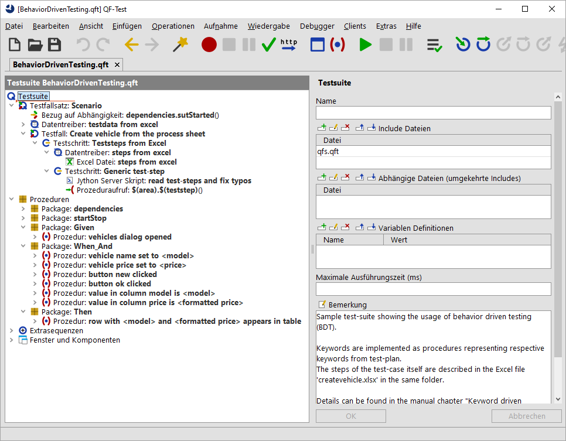

| Version 6.0.3 |
Eine technische Beschreibung eines Testfalles mit Behavior-Driven Testing (BDT) orientiert sich
an den grundlegenden Aktionen, die ausgeführt werden müssen.
Das dazugehörige Beispiel finden Sie unter qftest-6.0.3/demo/keywords/behaviordriven/
BehaviorDrivenTesting.qft.
Der dazugehörige Testplan liegt unter qftest-6.0.3/demo/keywords/behaviordriven/createvehicle.xlsx.
Bitte achten Sie darauf, dass Sie den Ordner in ein projektspezifisches Verzeichnis kopieren und diese dort modifizieren.
Nach BDT mit technischer Sicht wird unser "Fahrzeug anlegen" Testfall nun wie folgt beschrieben:
Der BDT Ansatz beschreibt Vorbedingungen und Aktionen mit Hilfe der Schlüsselwörter
Gegeben, Wenn, Und und Dann, die am Satzanfang stehen müssen.
Eine nähere Erläuterung dieses Konzeptes finden Sie in entsprechender Testliteratur.
Für QF-Test bedeutet dies, dass wir wieder Prozeduren bauen müssen, die dieser Beschreibung entsprechen.
Hier hat sich bewährt, dass die BDT-Keywords als separate
Packages erstellt werden. In der mitgelieferten Testsuite finden Sie hierfür auch die Packages Given, When_And und Then.
|
|  | ||
|
| Abbildung 27.6: Testsuite Behavior-Driven Testing technisch | ||
In unserer Beispiel-Testsuite liegen nun die entsprechenden Prozeduren unter den jeweiligen Packages, also z.B. eine Prozedur vehicles dialog opened unter dem
Package Given.
Um Flüchtigkeitsfehler bei der Beschreibung zu vermeiden wird vor dem Prozeduraufruf $(teststep) ein Server-Skript read test-steps and fix typos eingeführt, dass die gsamte
Beschreibung in Kleinbuchstaben formatiert und mehrfache Leerzeichen durch eines ersetzt.
Damit der selbe Testfall mit unterschiedlichen Testdaten abgespielt werden kann, wurde dieses Beispiel erweitert.
Natürlich könnte man hier auch versuchen, den generischen Erkennungsansatz, wie im vorigen Abschnitt beschrieben (Abschnitt 27.3), anzuwenden. Hierfür muss entweder die Beschreibung sehr genau sein oder das vorgelagerte Skript muss die Komponenten und deren Namen gut herausfinden können.
| Letzte Änderung: 6.9.2022 Copyright © 1999-2022 Quality First Software GmbH |